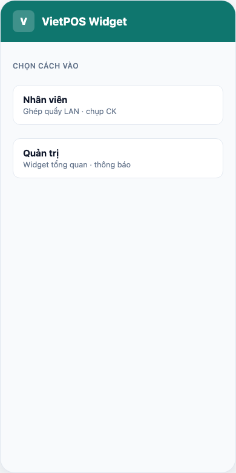
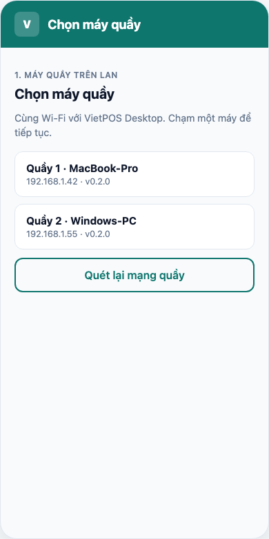
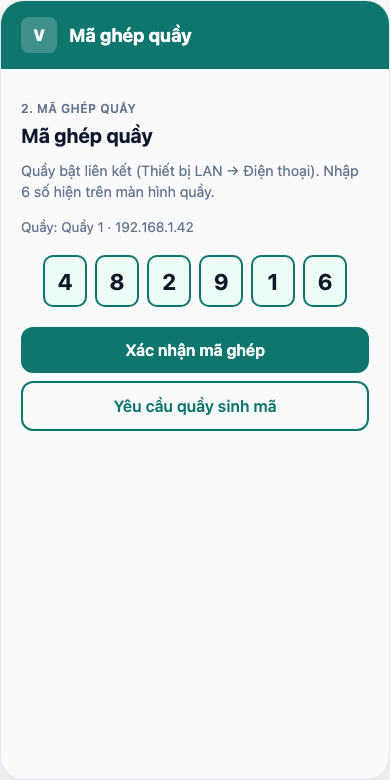
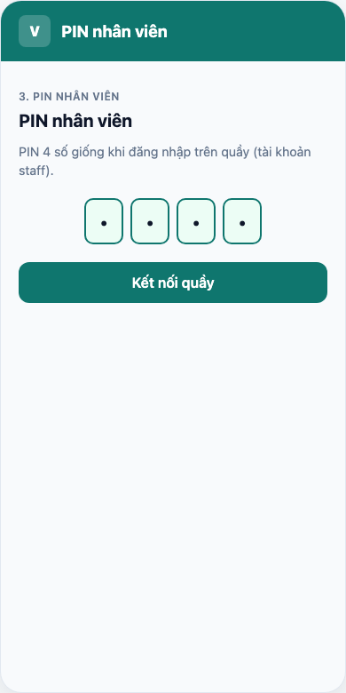
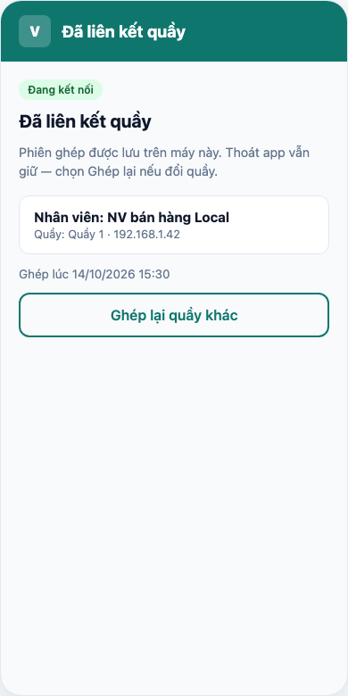

Widget Android — Ghép quầy (nhân viên)
Nhân viên bán hàng · tablet cùng Wi‑Fi với VietPOS Desktop · mã ghép + PIN
Trang này chỉ ghép quầy LAN và chụp CK. Widget tổng quan / thông báo đơn admin →
Widget · Quản trị.
Bán hàng trên quầy → Nhân viên bán hàng (POS).
Ghép quầy chỉ khi Desktop đang đăng nhập tài khoản nhân viên (staff) — không ghép khi quầy đang login admin/quản lý.
Nhân viên phải đã đặt PIN 4 số trên máy quầy (lần đăng nhập staff đầu tiên).
2. Cài app & Wi‑Fi
- Cài APK VietPOS Widget trên tablet/điện thoại.
- Thiết bị và máy quầy cùng Wi‑Fi (LAN nội bộ).
- Chức năng LAN + chụp CK: chỉ VietPOS Desktop (Tauri), không dùng POS trên trình duyệt.
3. Thiết lập trên quầy (Desktop)
- Đăng nhập POS bằng tài khoản staff (nhân viên bán hàng).
- Menu → Thiết bị LAN → tab Điện thoại.
- Bấm Bật liên kết (liên kết app VietPOS Widget). Mã 6 số hiện trên quầy (~2 phút); có thể sao chép mã.
- Danh sách điện thoại «Đang mở app Widget» khi tablet mở app cùng mạng.
- Chụp CK từ điện thoại: Cài đặt camera → nguồn Camera điện thoại (Widget) (thay cho webcam quầy).
Có thể tắt liên kết trên quầy khi không ghép thiết bị. Trạng thái bật/tắt được lưu trên máy quầy.
4. Vào màn Nhân viên (app Widget)
- Màn đầu → Nhân viên.
- Hoặc menu ≡ → Nhân viên.

5. Chọn máy quầy (LAN)
App liệt kê quầy trên mạng. Chạm một máy để tiếp tục.
Không thấy → Quét lại mạng quầy; kiểm tra Wi‑Fi, quầy đang mở, firewall.

6. Mã ghép 6 số
- Quầy đã bật liên kết (mục 3).
- Trên app: Yêu cầu quầy sinh mã → quầy hiện 6 số (tab Thiết bị LAN hoặc tự đồng bộ).
- Nhập 6 số → Xác nhận mã ghép. Sai → app xóa ô; Yêu cầu mã mới (cooldown ~1 phút trên quầy).

7. PIN nhân viên 4 số
- Nhập PIN giống lúc đăng nhập staff trên quầy.
- Kết nối quầy. PIN sai → app xóa ô PIN.

8. Đã liên kết quầy
Màn hiện tên nhân viên, quầy, thời gian ghép. Thoát app vẫn giữ liên kết.

Quầy đăng xuất → app yêu cầu nhập lại PIN.
Đổi quầy / NV: Ghép lại quầy khác.
9. Chụp chứng từ chuyển khoản
Sau ghép + PIN. Quầy chọn nguồn camera Widget (mục 3) → khi checkout CK, quầy gửi lệnh → app mở camera → ảnh về quầy; có thể lưu Pictures/VietPOS.
10. Đăng xuất
Menu ≡ → Đăng xuất hủy ghép quầy (và cả phiên quản trị nếu có). Cần ghép lại từ bước 5. Đăng xuất trên quầy cũng thu hồi phiên widget trên điện thoại.
11. Sự cố
| Triệu chứng | Xử lý |
|---|---|
| Không thấy quầy LAN | Cùng Wi‑Fi; Desktop mở; bật liên kết LAN; quét lại. |
| Mã ghép không hợp lệ | Nhập đúng 6 số trên quầy; sinh mã mới. |
| Chưa có tài khoản đăng nhập trên Desktop | Staff login trên quầy trước. |
| Chỉ ghép khi quầy đang đăng nhập nhân viên | Đăng xuất admin/manager → login lại bằng staff. |
| Chưa đặt PIN trên máy quầy | Staff đăng nhập Desktop và thiết lập PIN 4 số trên quầy. |
| PIN nhân viên không đúng | Nhập lại (app xóa ô); PIN phải trùng PIN đã lưu trên quầy. |
| Không chụp được CK | Đã ghép + PIN; Cài đặt camera = Widget; bật quyền camera; app mở/nền. |
Ảnh app: minh họa bám nhãn APK 0.2.0 (chụp lại từ tablet:
pnpm run capture:widget hoặc chụp tay). Phần quầy Desktop: Thiết bị LAN chỉ trên app Tauri.